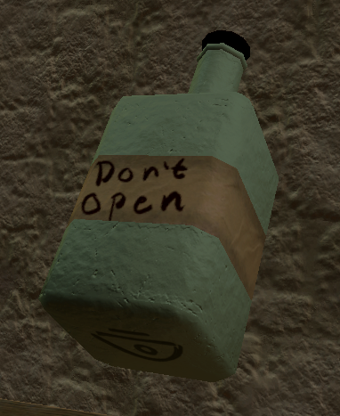

Item Generation
A large part of the game revolves around generating the items players can discover, so I needed a reliable way to ensure each one was both valid and unique. I also needed a system to verify whether a player had found the correct item. To solve this, I designed an ID-based system where every item combination is assigned a unique identifier. This allows me to efficiently store and retrieve item data, track how many instances of a specific item have spawned, and measure how similar different items are to one another.

For example, if we take a bottle, we can see that the type is "bottle," which corresponds to number #6. The difficulty in this case is #1. The base object is the whole bottle body, numbered #3. The first material is the green base material (#4), and the supporting material is the text label (#2). On top of the bottle is a lid, which is the hook object (#1). Lastly, there's the symbol (#5), which gives the object its ID: #6134215.

With this ID system, validating a delivery becomes easy: I simply compare the ID of the object the player handed in against the expected ID for the quest, and if they match, the objective is complete. Since every relevant property (type, difficulty, base object, materials, and symbol) is already baked into the ID itself, there's no need for separate checks or special-case logic per quest, one comparison covers it all.